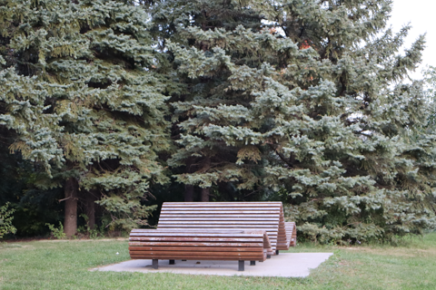
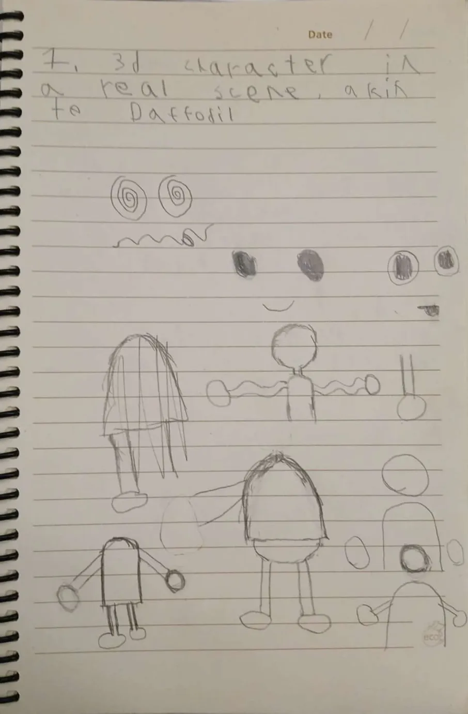

Group project with Antonio Massimo Tuphi William Brandon and Tracey
Project 3
Final LEA Assignment
For my final project of the semester, i will make a 3d character and animation that will play over a photo.
i was heavily inspired by Daffodil by Smallbu
i'm planning to... film? the background... or animation... i don't know what this counts as but i'm doing it at a park near my house where there are big benches i like to go to.
i have now filmed the background, now i should be able to export my animation as a bunch of frames with an alpha applied
from here, i'm just working on a pretty simple model. I don't want to make anything too complicated since the animation itself will be a struggle to make, and the animation is the true project, not the model.
it only took me two weeks, four lost textures and a , but i've finally rigged my little guy, i'm debating giving him hair but honestly this has taken me so long that i might just animate him as is.
ok this is starting to take a lot longer than i thought it would. you'd think a few days off would make it easier to work, but it seems my brain is under the assumption that break is here and refuses to do any meaningfull work : (
i have been able to trick it into working on it more, but i still have some ways to go
as of now i have
- retouching the animation to make sure nothing breaks (a lot did)
- redoing the voice acting to match the movement better
- rendering on my underpowered dusty pc
- dropping everything into premiere and potentually adding folley or not i haven't decided yet
"the thing about the verge of success is that it often looks like the verge of faliure."
-me, right now
it's time to throw the towel in the ring so to speak, except this time it's the blender project in the dropbox
i was NOT able to finish the animation in time, i am way over deadline and i have to submit something, so here is what i have up to the 970th frame, no voice acting, no background, no coin that i couldn't figure out how to get the texture of.
i will try to finish it as a personal project, as i have spent too much time on it to give up entierly, but blender has become a beast i am enamoured by. I see the potention of self expression and unique project that are possible in the software, and i must learn to play to it's strengths to make it do what i want.
for now, i leave you with this, an unfinished animation that took me weeks of obsession and borderline insanity to make work, and will take you just a minute to judge and dismiss.